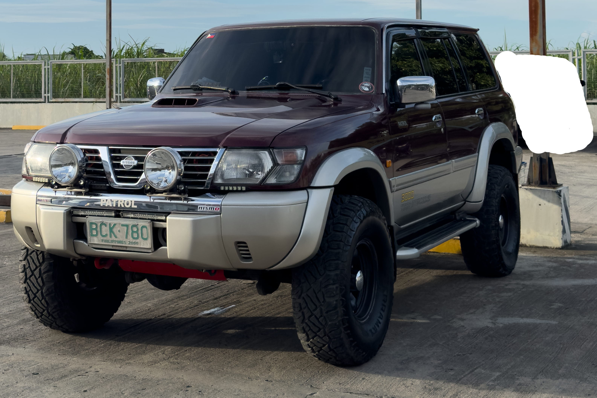
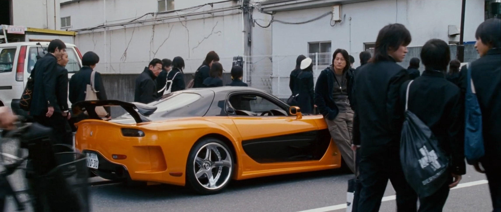
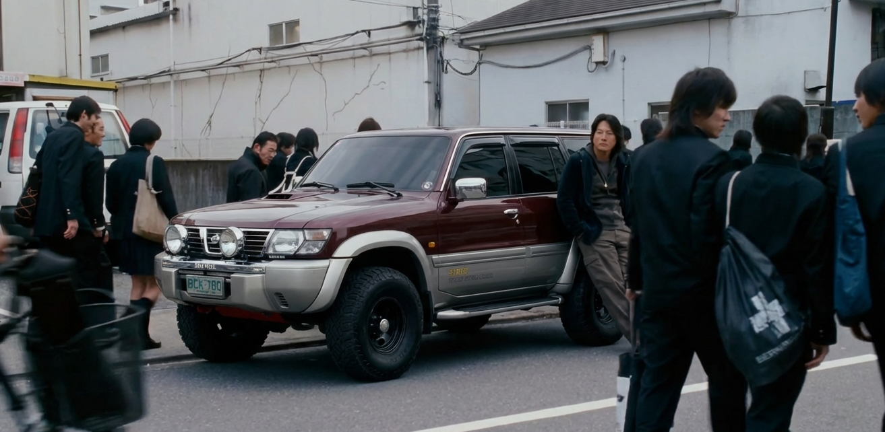
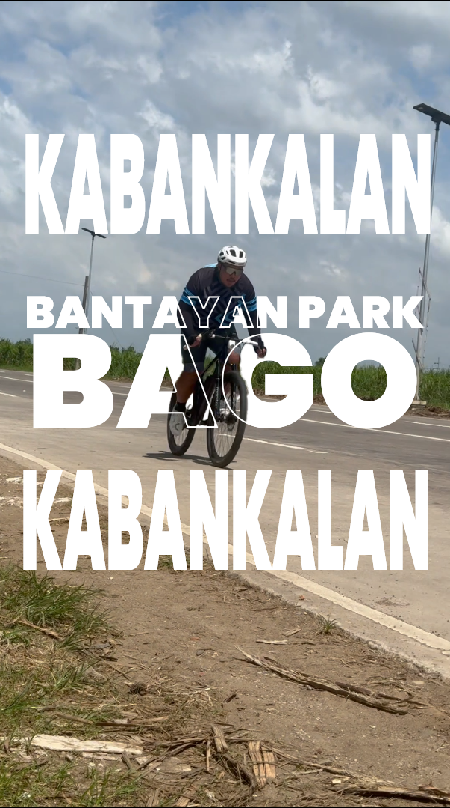

Creative &
Editing Work
Short-form video editing and photo enhancement, with
a strong understanding of trends, hooks,
and
AI-assisted content creation.
 DaVinci Resolve
DaVinci Resolve
[ AI Edit | Trend Recreation ]
Tokyo Drift Scene Recreation
Recreate a trending scene edit by replacing
the vehicle in a well-known clip while
keeping the result
natural and visually consistent.
I gathered key assets, including the replacement vehicle and scene references, then used AI tools to replace the car and generate motion. The final edit was refined in post and published as a short-form video using platform-native audio.
Process
Asset Gathering
Clips, references, and source material preparation
AI Scene Creation
Rebuilding the scene using AI and precise prompting
Video Assembly
Compositing, timing, and final edit refinement
Publishing & Optimization
Platform-ready export using trend-aware audio and formatting



REEL_INDEX: TOKYO_DRIFT_AI_V1
[ Content Strategy | Multi-format Execution ]
Short vs Long-Form Performance
Demonstrate that strong reach and engagement are achievable without a large follower base or AI-assisted content through precise timing, relevant concepts, and well-executed editing.
For short-form, I identified a timely
trend and built a concept
around a familiar question, then introduced a niche-specific twist.
For long-form, I focused on editing
execution, using pacing,
jump cuts, and light humor to maintain
engagement throughout.

[ Chromatic Precision ]
Color Grading & Image Enhancement
Many images either lack visual impact or become overprocessed through presets. The challenge is to enhance mood, clarity, and subject focus while maintaining a natural and believable look.
A fully manual grading workflow focused on precise color correction, tonal balance, and selective masking to shape light, isolate subjects, and control depth without relying on LUTs.
Cinematic & Moody
CINEMATIC MOOD
Controlled Light & Contrast
Creating depth and directing focus through intentional use of light and shadow
PROCESS
- Manual Color Grading (No LUTs)
- Selective Light & Shadow Sculpting
- Refining tonal balance, isolating subjects, and controlling depth to achieve a cinematic, intentional finish
Clean & Professional
CLEAN AESTHETIC
NATURAL COLOR
CLARITY & BALANCE
Preserving true-to-life tones while enhancing clarity, detail, and overall visual consistency for a polished, professional finish.
PROCESS
- Color Correction & Tone Balancing
- White Balance & Exposure Normalization
- Subject Clarity & Detail Enhancement